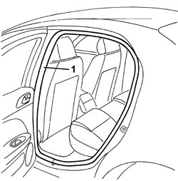
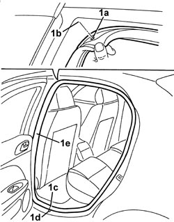

7010A34 REAR SIDE DOOR COMPARTMENT SEAL - R.R
- Path
- Procedures > 70 FITTINGS > 7010 PASSENGER COMPARTMENT REAR SIDE DOORS > 7010A REAR SIDE DOOR ASSEMBLY > 7010A34 REAR SIDE DOOR COMPARTMENT SEAL - R.R
- Kind
- repair procedure (removal / refitting; the operation number is the code)
- Applies to
- all engines; all production periods
- Interactive page
- https://sloeber94.github.io/elrnDB/alfa/159/en/#/939011161
Applies to: all engines; all production periods
 Removing
Removing
 Refitting
Refitting- Open the door.
1. Release the seal along the entire perimeter of the door housing.

Applies to: all engines; all production periods
Refitting
Removing- Check that the seal is not damaged.
1. Fit the seal (1e) in position ensuring that the reference (1a) is aligned with the centre of the corner (1b) and the join (1c) with the water drainage splining (1d).

Applies to: all engines; all production periods
- Check that the door shuts properly and is correctly aligned with the bodywork.
Topics that link to this page (9)
- T002 WIND NOISE FROM THE REAR DOORS
- V006 REAR DOOR WATER PENETRATION
- 7010OA REAR DOORS NOISE LOCALISATION
- 5505C41 PASSENGER COMPARTMENT WIRING - R.R
- 7030B12 SLIDING ROOF (ASSEMBLY) - R+R
- 7030B40 DRAINAGE CHANNEL - R R
- 7030B50 SUN ROOF SLIDING GUIDE (ONE), LH OR RH - R.R
- 7040H10 ROOF PANEL LINING - R.R.
- 7040H16 ROOF PANEL LINING FOR VERSIONS WITH SUN ROOF - R.R